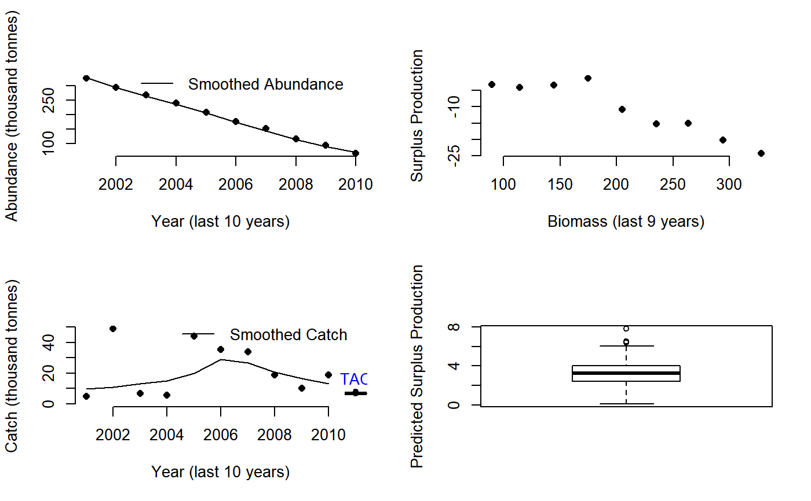

Gcontrol.RdA harvest control rule proposed by Carl Walters that uses trajectory in inferred surplus production to make upward/downward adjustments to TAC recommendations
Gcontrol( x, Data, reps = 100, plot = FALSE, yrsmth = 10, gg = 2, glim = c(0.5, 2) )
| x | A position in the data object |
|---|---|
| Data | A data object |
| reps | The number of stochastic samples of the MP recommendation(s) |
| plot | Logical. Show the plot? |
| yrsmth | The number of years over which to smooth catch and biomass data |
| gg | A gain parameter |
| glim | A constraint limiting the maximum level of change in quota recommendations |
An object of class Rec with the TAC slot populated with a numeric vector of length reps
The TAC is calculated as:
$$\textrm{TAC} = \textrm{SP} \left(1-gG\right)$$
where \(\textrm{SP}\) is the predicted surplus production for the next year,
g is a gain parameter, and G is the slope of surplus production
as a function of biomass over the last yrsmth years.
The change in TAC is bounded by the glim argument, which by default does not allow
the TAC to decrease by more than half or increase more than twice the last annual catch.
See Data for information on the Data object
Gcontrol: Abun, Cat, Ind, Year
See Online Documentation for correctly rendered equations
Carruthers et al. 2015. Performance evaluation of simple management procedures. ICES J. Mar Sci. 73, 464-482.
Other Index methods:
GB_slope(),
GB_target(),
ICI(),
Iratio(),
Islope1(),
Itarget1_MPA(),
Itarget1(),
ItargetE1()
#> Error in if (all(round(TAC/mean(TAC, na.rm = TRUE), 1) == 1)) { points(max(years), mean(TAC, na.rm = TRUE), pch = 16, cex = 2, col = "blue") text(max(years), mean(TAC, na.rm = TRUE), "TAC", pos = 1, col = "blue")} else { boxplot(TAC, add = TRUE, at = max(years), col = "blue", width = 1, outline = TRUE, axes = FALSE) text(max(years), quantile(TAC, 0.95, na.rm = TRUE), "TAC", pos = 3, col = "blue")}: missing value where TRUE/FALSE needed